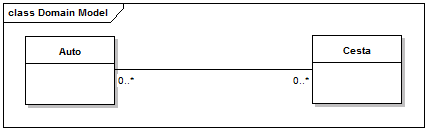
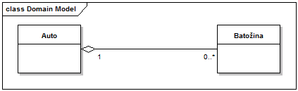
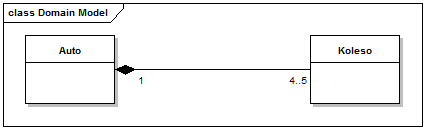

UML - Diagramy tried (Class Diagram description)
Class diagramy sú pravdepodobne najznámejším a najpoužívanejším UML diagramom. Jedná sa o štrukturálny UML diagram, ktorý popisuje štruktúru systému. Konkrétne sa jedná o triedy systému, ich atribúty, metódy a vzťahy medzi triedami.
Asociácia je typ vzťahu medzi triedami, a to všeobecne systém ich prepojení. Binárna asociácia je vzťah medzi dvomi triedami. Vizuálne sa znázorňuje čiarou, ktorá ide od kraja jednej triedy ku kraju druhej triedy.
Asociácia môže mať i inú kardinalitu (tzn. obmedzenie o početnosti entít vo vzťahu), ako 1:1, a to 1:N, M:N. Napríklad kardinalita M:N hovorí o tom, že vo vzťahu je M objektov jedného typu s N objektami iného typu.

Agregácia je typ vzťahu medzi triedami. Upresňuje to, že jedna trieda "má" nejaký počet iných objektov, avšak nevlastní ich výlučne. Zrušením tohto kontajnerového objektu nezanikajú nutne objekty, ktoré združoval.
Agregácia je zobrazovaná plným diamantom pri kontajnerovej triede a čiarou smerujúcou k triede, ktorej objekty obsahuje kontajnerový objekt.
Agregácia je používaná prevažne s kardinalitou 1:1, 1:N, aj keď pri kardinalite 1:1 sa nezvykne hovoriť o agregácii.

Kompozícia je typ vzťahu medzi triedami. Upresňuje to, že jedna trieda "vlastní" nejaký počet iných objektov, vlastní ich výlučne. Zrušením tohto kontajnerového objektu zanikajú objekty, ktoré vlastnil.
Kompozícia je zobrazovaná prázdnym diamantom pri kontajnerovej triede a čiarou smerujúcou k triede, ktorej objekty obsahuje kontajnerový objekt.
Kompozícia je používaná prevažne s kardinalitou 1:1, 1:N, aj keď pri kardinalite 1:1 sa nezvykne hovoriť o kompozícii. Rozdiel medzi agregáciou a kompozíciou je hlavne vo výlučnosti vlastníctva.

Generalizácia je typ vzťahu medzi triedami. Pokiaľ napríklad dve triedy majú niečo podobné, je časté a žiaduce, že ich spoločné vlastnosti "vytlačíme" do tzv. generalizačnej triedy. Táto trieda je otec alebo nadtyp jeho potomkov, resp. subtypov (podtypov), ktoré vznikli špecializáciou od generalizovanej triedy.

Pre viac informácii odporúčam navštíviť iné zdroje, napríklad Class Diagram wiki